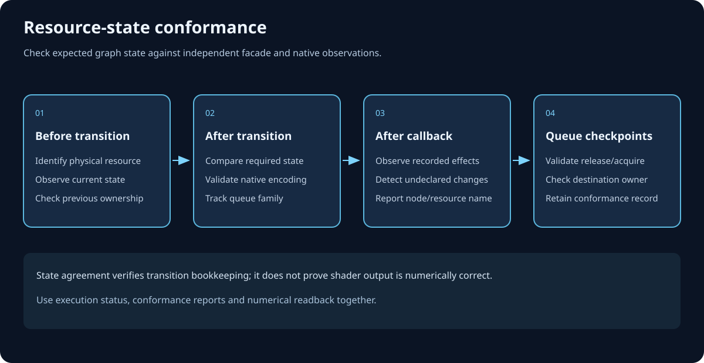

Validation and debugging
Diagnose an invalid graph edit, a GPU execution error, or incorrect numerical output using evidence from each stage.
Learning objectives
Separate declaration failures, native-state evidence, memory reports and numerical correctness checks.
Start with edit status
Check every returned status. Foreign/stale handles, uncovered reads, contradictory dependencies, cycles and pipeline ambiguity indicate declaration errors. Multiple writers are supported: on their overlapping regions, inspect original successful attachment order to determine which write feeds each read. An owned read before the first of multiple writes is uninitialized; an explicit edge against an inferred hazard creates a cycle. VRAM-cap failure is a planning result. Bounded exhaustion is not proof that every order is infeasible.
An Incomplete graphics pipeline diagnostic names a stage without a complete continuation. Finish its typed chain with a pixel operation, or intentionally capture that stage through a successful FetchBuffer materializer. A standalone vertex operation or vertex/raster chain is invalid even when unused: completeness is checked before culling. Capturing a vertex value does not complete a separate unfinished raster branch. Wrong input kinds, stage order, foreign/stale values and incompatible shader declarations remain errors on capture paths. See materializer registration.
Inspect native state evidence
Check execution status, submission failures, queue waits and state conformance failures. mbValidateResourceStates compares expected graph state with facade/backend/native observations at transition and ownership checkpoints. Records include resource names, expected state/owner, observed snapshots and query status.

Names are not identities
Display names help diagnostics. Timing samples retain complete node handles rather than parsing batch labels. Execution pass indices are local to lowered work and may include generated boundaries. Use FindNode(), topology and compile handles for semantic inspection.
Investigate allocation and overlap
Compare allocated, peak-live and aliased bytes with inserted memory dependencies. Small imported views may retain entire native heaps. Efficiency and Memory optimize different modeled objectives; measure real GPU duration before concluding that one plan is faster.
Measure repeated frames
Timing is disabled by default. Enable mbEnableGpuTiming inside an edit, then call CollectTelemetry() or continue submitting frames. Collection polls completed work without adding GPU waits. GetTimingProfile() returns per-node EMA durations (default alpha 0.2), counts and last/minimum/maximum values. GetTimingHistory() returns up to 4096 raw node samples by default. Sampling interval one attempts to measure every frame; increase it to reduce instrumentation overhead.
Missing samples can mean pending GPU work, an unsupported queue, an unsampled frame or a dropped telemetry query. Pure stage/synchronization nodes have no timed GPU commands. Copy timing requires queue-specific support; CUDA regions preserve batches and exclude surrounding handoffs. These durations do not measure CPU recording/submission or end-to-end frame latency.
OptimizeFromTimingProfile() requests a bounded search and does not immediately replace the plan. Inspect GetAdaptiveSchedulingStats(): pending means a prepared candidate is awaiting natural retirement of the active frame slots. No accepted plan may mean insufficient eligible samples, no modeled improvement above the threshold, a failed preparation, or continued GPU saturation. Check the last status and candidate/baseline costs. A successful adoption increments the accepted count and compile revision even without a semantic edit.
GetPipelineCacheStats() and GetCudaGraphStats() expose PSO/executable reuse. ClearTimingProfile() resets EMA/history and invalidates old timing-based proposals without waiting for the GPU. Measure repeated outputs and durations before crediting a model-selected order with a speedup. The telemetry guide documents configuration and bounded-search limits.
Verify output
The minimal clear/readback graph checks exact bytes. Terrain --verify validates first-frame indices, positions, shared-edge heights, gradients and generated heights. It also reads the terrain color target and checks that the initial camera sees both red and bright neutral contours, catching blank or entirely red output that geometry checks alone accept. These color checks target the initial example view, not arbitrary camera positions. Later frame constructions omit the diagnostic readbacks.
If terrain verification fails, the example preserves the original error and performs one diagnostic rerun with readbacks of uploaded/copied settings and raw/eroded heightmaps. The report includes GPU/driver identity, stage samples and whether triangulated vertex heights match the eroded texels. Additional transfers retain intermediates and can change synchronization or aliasing; a passing diagnostic rerun is reported separately and does not turn the original failure into success. Run native D3D12/Vulkan examples and inspect rendered output after graphics changes. State validation alone does not verify shader mathematics.
Common corrections
- Invoke repeated writes and intervening reads in their intended order. Every call records a distinct operation; describe the next frame again and omit unwanted operations.
- Use separate output handles when old contents must survive an overwrite; repeated writes do not allocate implicit versions.
- Mark observable output and side effects. Culling conservatively retains hazard predecessors rather than eliminating overwritten writes.
- Declare all library accesses and retain prepared state.
- Pass typed vertex and fragment values between graphics operations; each raster branch becomes an independent draw.
- Initialize imported textures or acquire their swap-chain images before first submission; reject Unknown, Discard or nonuniform state, and restore the captured entry state before replay.
- Release cached backbuffer imports before resize.
- Keep CPU upload inputs stable through recording.
Chapter summary
Inspect compile and execution status, measure repeated frames and verify outputs; state conformance alone cannot prove shader mathematics.
Source and API
Read the developer guide, pipeline guide, public API reference and graph declarations.